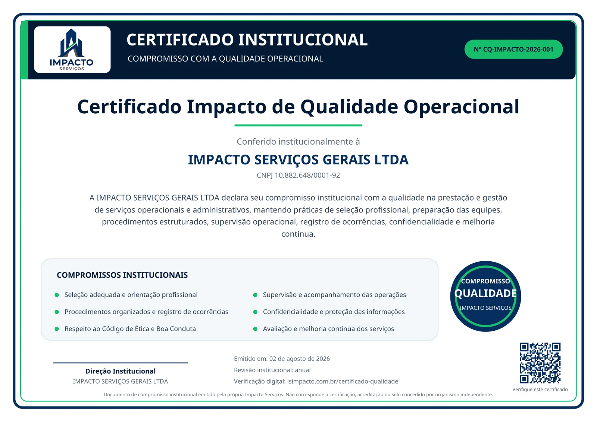

01
Código de Ética e Boa Conduta
Diretrizes contra assédio, abuso, agressões, discriminação, humilhação e outras condutas incompatíveis com um ambiente respeitoso.
A Impacto reúne diretrizes institucionais para promover respeito, integridade, organização, confidencialidade e melhoria contínua na prestação dos serviços.
Diretrizes contra assédio, abuso, agressões, discriminação, humilhação e outras condutas incompatíveis com um ambiente respeitoso.

Documento institucional que registra o compromisso da Impacto com seleção, preparação, supervisão, confidencialidade e melhoria contínua.
Ambiente de trabalho livre de assédio, discriminação, intimidação e agressões.
Preparação, acompanhamento e orientação compatíveis com cada função.
Proteção das informações relacionadas a clientes, contratos e profissionais.
Avaliação de processos, comunicação de ocorrências e evolução das rotinas.